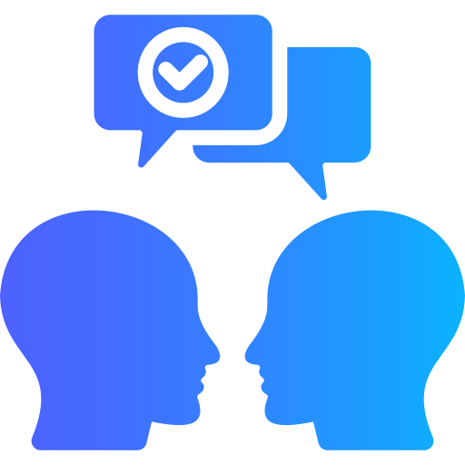
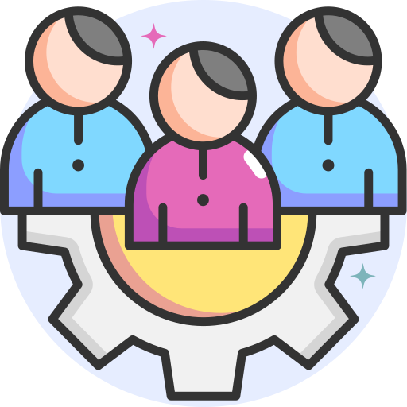
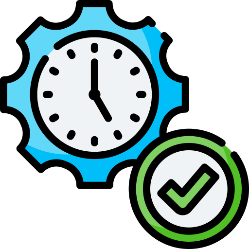
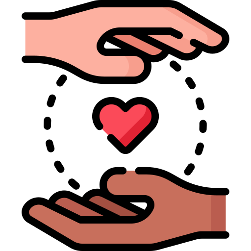

Habilidades
Frontend
Backend
Otros
Hobbies
Clickea en el símbolo para más información
Habilidades blandas
Resolución de problemas

Comunicación efectiva

Trabajo en equipo y colaboración
Adaptabilidad y aprendizaje continuo

Gestión del tiempo y Organización

Orientación al usuario